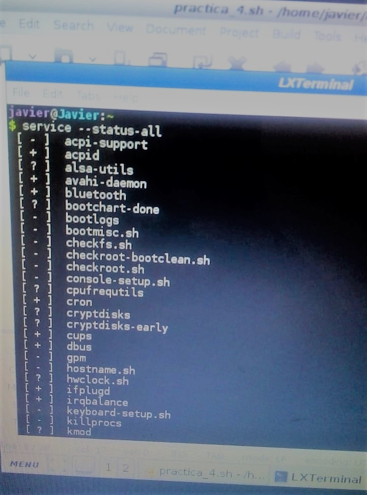
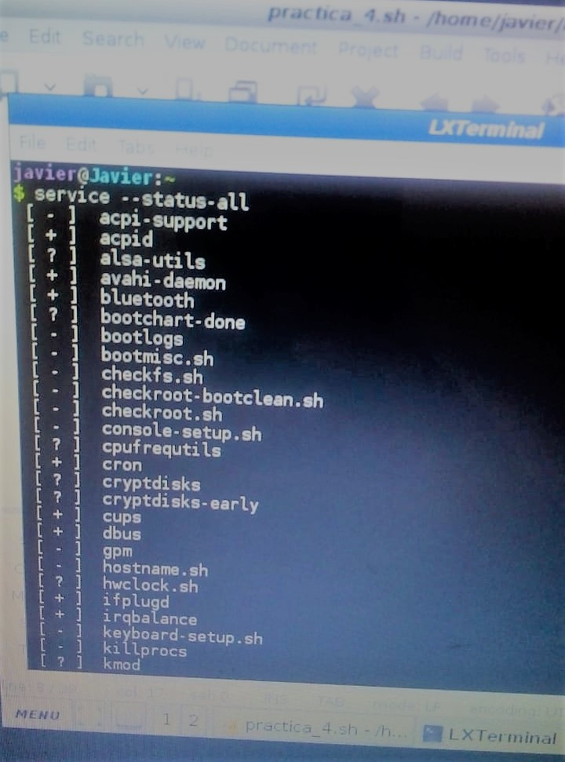

Este comando nos sirve para mostrarnos los servicios en Windows

Servicios en Windows
Linux

Ejecutando el comando "service --status-all" nos mostrara los servicios en Linux
Este comando nos sirve para mostrarnos los servicios en Windows
Servicios en Windows

Ejecutando el comando "service --status-all" nos mostrara los servicios en Linux